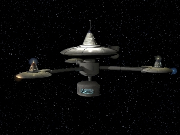

Lighthouse Station Lighthouse Station
12 Days from Sol Space Fortification Although the CMC maintains a number of waystations in the Earth Sphere and the Asteroid Belt for shuttles that break down and need emergency assistance, Lighthouse was the first station to be put in the middle of Deep Space, and to this day remains the largest of the CMC waystations. Capable of operating under its own power and totally self sufficient, it sits halfway between Earth and the Asteroid Belt, assisting interplanetary travellers on their long flights across the solar system. Lighthouse Station  |